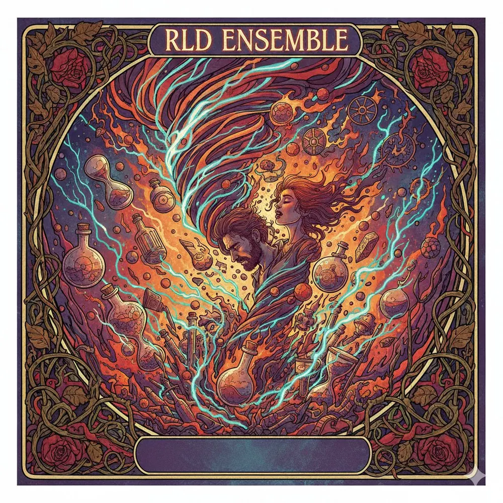
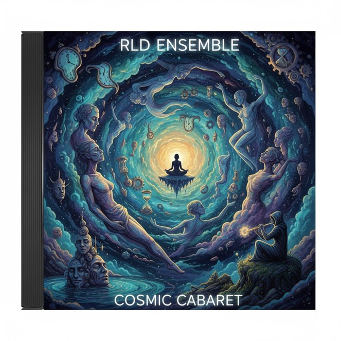
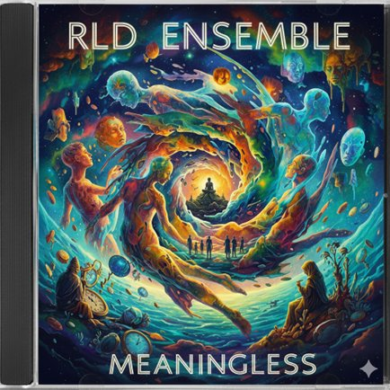
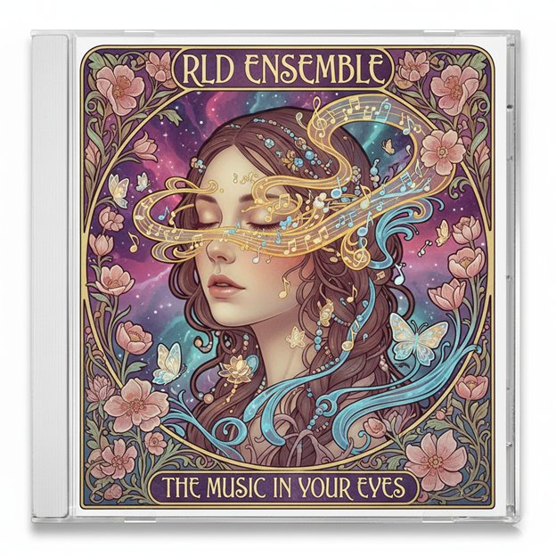
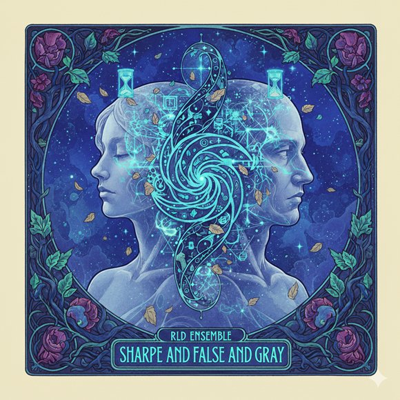

Assorted Minds · Discografía Completa
CINCO
ÁLBUMES
Cinco Capítulos · 50 Canciones · Múltiples Idiomas
Colección Completa
ASSORTED MINDS

Álbum 01
ECHOES & FAREWELLS
Ecos y Despedidas · 10 tracks

Álbum 02
COSMIC NIGHTS
Noches Cósmicas · 10 tracks

Álbum 03
INNER LANDSCAPES
Paisajes Interiores · 10 tracks

Álbum 04
HORIZONS
Horizontes · 10 tracks

Álbum 05
PICTURES & WALLS
Imágenes y Muros · 10 tracks